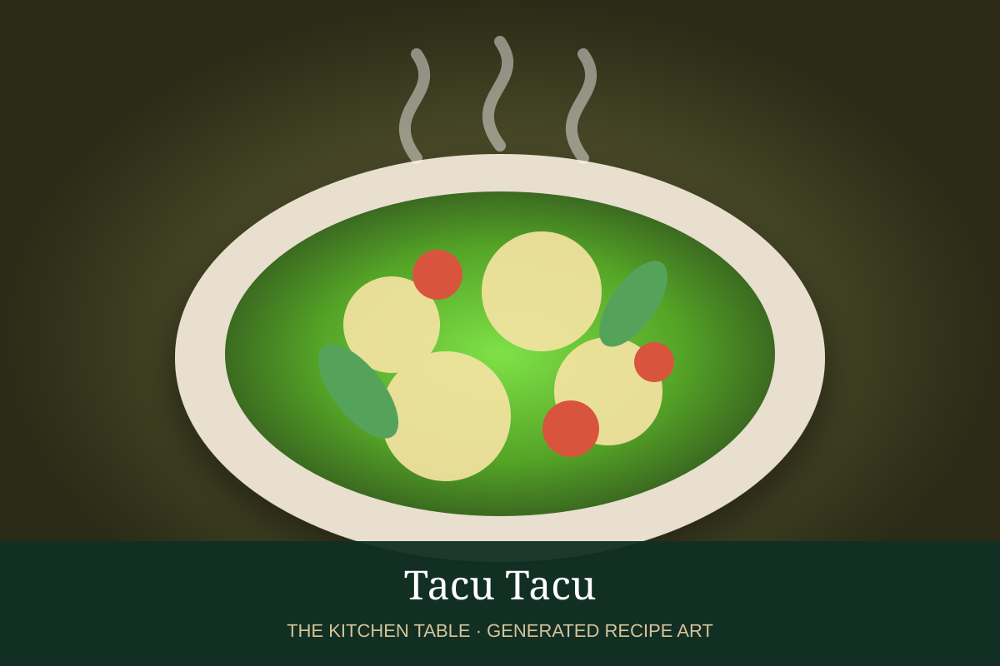

← Back to all recipes
RICE & BEANS · PERUVIAN
Tacu Tacu
Crisp Peruvian rice-and-bean cakes flavored with onion, garlic, ají amarillo, and cumin.
35 minServes 4

Photo: Cecilia Tupac
Ingredients
- 2 cups cooked white rice, preferably chilled
- 2 cups cooked canary beans or pinto beans, drained
- 1 small onion, finely chopped
- 2 garlic cloves, minced
- 1 tbsp ají amarillo paste
- 1/2 tsp cumin
- 2 tbsp neutral oil, plus more for frying
- Salt and black pepper
- Salsa criolla, for serving
Preparation
- Mash half the beans roughly, leaving some whole.
- Cook onion in oil until soft; add garlic, ají amarillo, and cumin.
- Mix onion mixture with rice and beans and season well.
- Shape into oval cakes or form one large omelet-like cake.
- Fry in a well-oiled skillet until crisp and browned on both sides.
- Serve with salsa criolla and, if desired, steak, egg, or seafood.